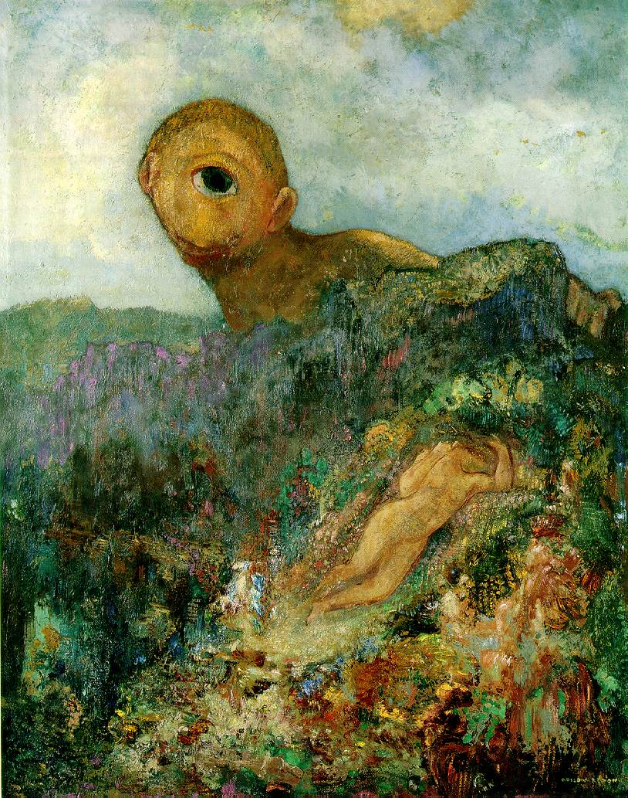
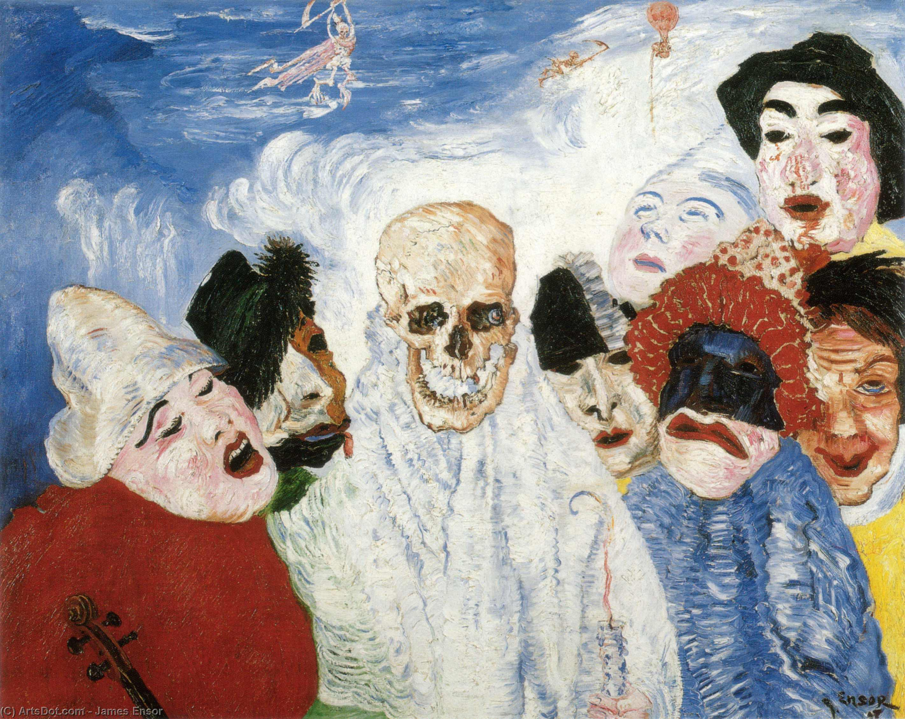
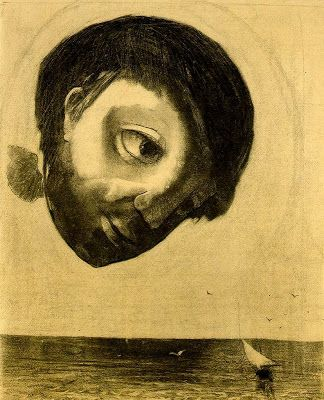
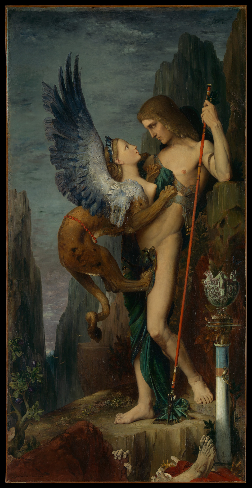
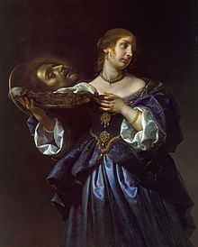
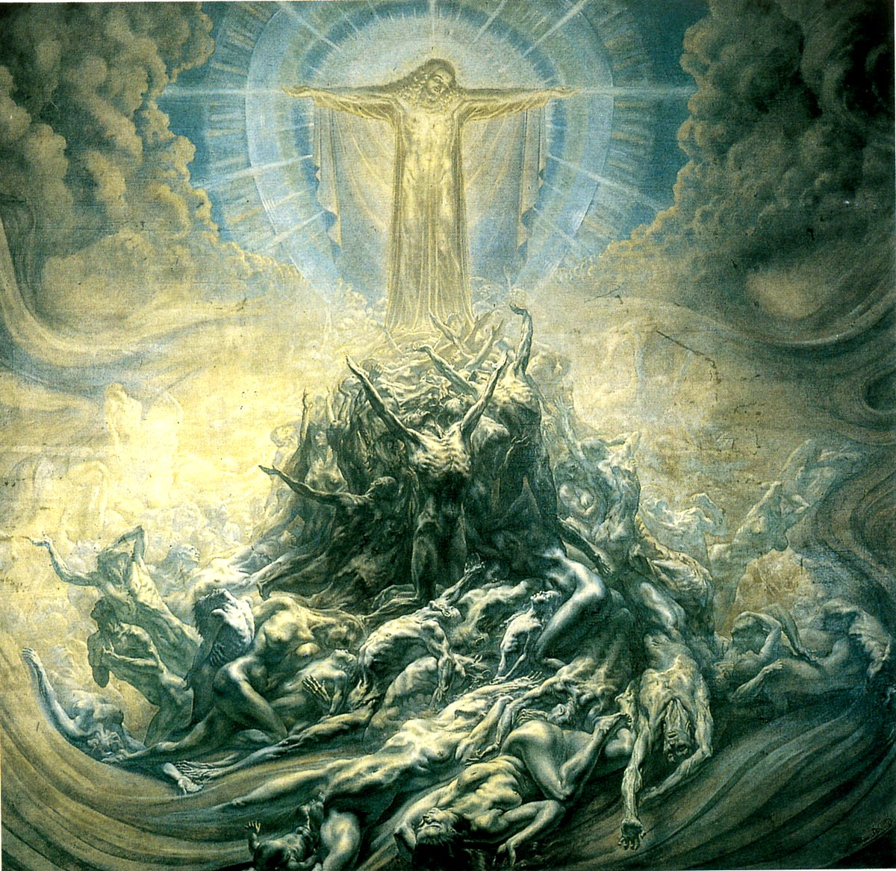
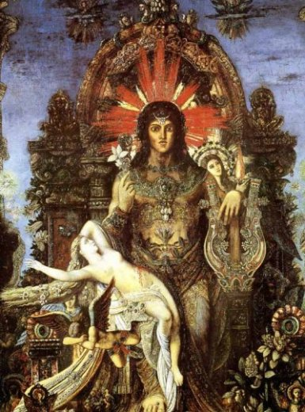
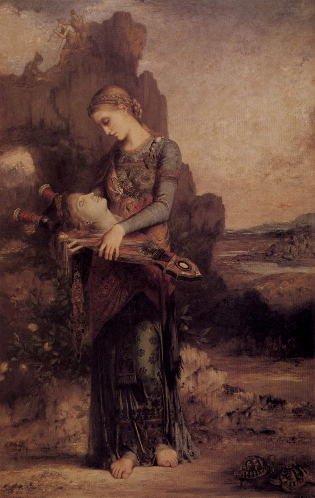
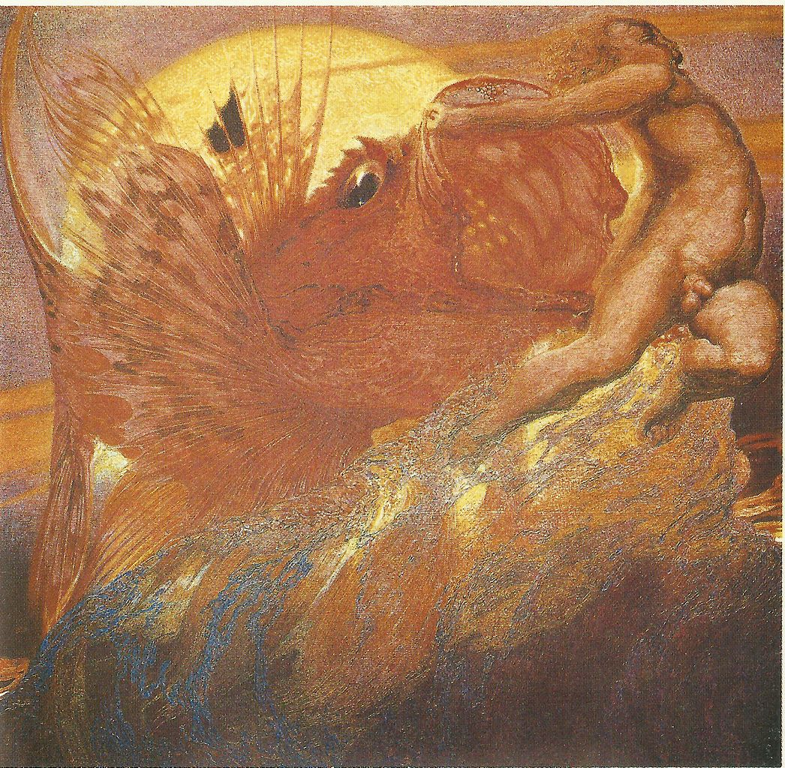

EL SIMBOLISMO EN EL ARTE
Historia del simbolismo y sus inicios
De forma paralela al movimiento impresionista, más interesado en la pintura al aire libre mostrando retazos de realidad en movimiento, también ajeno al arte academicista de los Salones surgió una pintura de contenido más poético que ha venido a denominarse simbolista. A pesar de que el simbolismo nació como concepto literario, pronto se identificó con la obra de arte de una generación de pintores que rechazaban las convenciones del arte naturalista.
Sus antecesores más directos son William Blake, los nazarenos y el arte de los prerrafaelitas, seguidores de una pintura de corte más medieval justo anterior a lo instaurado a partir del Renacimiento y su gran representante Rafael Sanzio.
El simbolismo fue uno de los movimientos artísticos más importantes del siglo XIX. Nacido en Francia en 1886, se valió del uso de símbolos (relacionados con lo abstracto) para representar emociones y una imaginación sin límites. El simbolismo se destacó por su contenido poético con una búsqueda interior de verdades universales como la espiritualidad, la imaginación y los sueños. En este artículo veremos la importancia, el manifiesto, obras y representantes más importantes de este movimiento.

INICIOS
El simbolismo fue un movimiento de finales de siglo XIX cuyos artistas comunicaron ideas a través de símbolos en lugar de representar la realidad. Fue creado como una reacción a los movimientos artísticos que representaban el mundo natural de manera realista: el impresionismo, el realismo y el naturalismo.
El simbolismo surgió y fue codificado en la obra de los escritores Gustave Moreau y Jean Moréas, quienes usaron por primera vez el término “simbolismo” en 1886. Este movimiento siguió cronológicamente al impresionismo, siendo fue la antítesis del mismo ya que ponía especial atención en el significado detrás de las formas y los colores.
El simbolismo en las artes visuales tuvo su origen a principios del siglo XIX, haciendo un énfasis romanticista en la imaginación, en lugar de la razón. Para los simbolistas convencionales era más importante la vida interior que la realidad externa.
Proposito del simbolismo
Los simbolistas buscaron escapar de la realidad, expresando sus sueños y visiones personales a través del color, la forma y la composición. Poseían una preferencia casi universal por trazos amplios de color no modulado y formas planas. En el desarrollo del simbolismo, la idea de lo espiritual era muy importante y reflejaba las filosofías anti materialistas relacionadas con el misticismo. Un interés por lo oculto estaba relacionado con este concepto, al igual que representaciones de lo mórbido y lo perverso.
Por ejemplo en la obra La Muerte y las Máscaras (1897), James Ensor imparte cualidades realistas al cráneo de la Muerte en el centro, con su sonrisa escalofriante y también a las máscaras de la gente. La máscara se convierte en la cara y, sin embargo, sigue siendo una máscara que intenta encubrir el vacío espiritual de la burguesía y la decadencia de los tiempos.
EL MANIFIESTO SIMBOLISTA
En 1886, el crítico Jean Moréas publicó “El Manifiesto Simbolista” citando a Baudelaire y sus seguidores, los poetas Stéphane Mallarmé y Paul Verlaine, como líderes del movimiento. Aunque el trabajo de Moréas intentó definir un estilo literario, también ayudó a codificar un nuevo marco estético y conceptual en las artes visuales. En este arte, escribió: “las imágenes de la naturaleza, las acciones de los seres humanos, todos los fenómenos concretos no sabrían por sí mismos cómo manifestarse; éstos se presentan como la apariencia sensible destinada a representar su afinidad esotérica con las ideas primordiales".
En otras palabras, el manifiesto proclamaba que cada persona, elemento natural y objeto deberían usarse para representar un símbolo de una idea o emoción más profunda. Moréas creía que, en lugar de replicar la realidad, los artistas deberían sugerirla con símbolos; o como dice el artista Odilon Redon: "hacer visible el mundo invisible".

En esta obra una gran cabeza flota en lo alto sobre las olas en un mar tranquilo, contemplando un pequeño velero con ojos enormemente expresivos.Nombrada "Espíritu Protector de las Aguas", hecha por Odilon Redon en el año 1878.
La pintura y las emociones
A pesar de que el simbolismo comenzó como un concepto literario, pronto se identificó con la obra de arte de una generación de jóvenes pintores que rechazaban las convenciones del naturalismo. Las obras de arte simbolistas fueron creadas en su mayoría con colores no modulados, pinceladas amplias y formas planas y abstractas. Los simbolistas constituyeron un grupo variado con diferentes estilos y técnicas artísticas. Sin embargo, todos destacaron la importancia de la imaginación y las emociones sobre el realismo y el racionalismo.
En la pintura el simbolismo representó una síntesis de forma y sentimiento, de la realidad y la subjetividad interna del artista. Inspirados por el psicoanálisis, los simbolistas a menudo retrataron la vida interior de los sujetos. En la obra de arte, Edipo y la Esfinge (1864), la mirada mutua de los sujetos sirve como símbolo de introspección, la necesidad de mirar dentro de uno mismo.

Las mujeres fueron los sujetos preferidos para expresar emociones.
Éstas eran representadas como mujeres fatales o vírgenes caprichosas.
Un ejemplo de una obra antecedente a este movimiento, es Salomé y la Cabeza de Juan el Bautista (1670). En ella observamos las características que retomaría el simbolismo.

TEOSOFÍA, MISTICISMO Y ABSTRACCIÓN EN EL SIMBOLISMO
El movimiento simbolista abandonó la idea de que el arte debería representar el mundo tal como aparece para los sentidos y, en cambio, alentó a presentar ideas y experiencias que trascendieran el mundo material. Así, el simbolismo condujo a la aparición de la abstracción modernista en la literatura y el arte.
Los simbolistas tuvieron un gran interés en la teosofía, la alquimia, otros sistemas alternativos de espiritualidad y por las otras dimensiones de la existencia. Ésta era una forma alternativa de pensar sobre la espiritualidad y el arte.
Según los principios teosóficos, el universo originalmente contenía átomos y un vacío. El vacío era una fuerza latente que podría organizarse en una fuerza deliberada. De la nada, eventualmente surgió la voluntad.
La teosofía sostenía que el color tenía una propiedad espiritual vibrante capaz de despertar la espiritualidad latente dentro de una persona. También proclamaba que el arte debía comenzar en la naturaleza y que el apocalípsis conduciría al futuro nuevo mundo.

Obras y artistas importantes dentro del simbolismo
El simbolismo fue un fenómeno internacional complejo especialmente prominente en Francia (Gustave Moreau, Odilon Redon, Paul Gauguin), Bélgica (Fernand Khnopff, Jean Delville) y Gran Bretaña (Dante Gabriel Rossetti, Sir Edward Coley Burne-Jones, George Frederic Watts , Aubrey Beardsley).
Estas son algunas de las obras más destacadas del simbolismo:
Jean Delville
El Dios-Hombre (1900)

Contrasta la idea de la esclavitud de la carne con la visión de lo puro e iluminado de las almas ascendiendo al cielo.
Esta pintura representa la figura misericordiosa de Cristo, el Gran Iniciado, que se eleva sobre los cuerpos de las almas que luchan por la unión con lo divino. El color azul dominante es un símbolo de espiritualidad.
Gustave Moreau
Júpiter y Semele (1895)

Esta famosa obra de arte de Gustave Moreau retrata la historia de amor entre el dios griego Júpiter y Semele (1865).
Cuando Semele hace el amor con Júpiter, se consume por su luz representada en la pieza por la corona con rayos. La obra de arte simboliza la fusión humana con lo divino que sucede después de la muerte.
La composición rica en detalles y colores, entrelaza hábilmente los temas de muerte, lujuria y resurrección.
Orfeo (1865)

Para su obra maestra Orfeo (1865), Gustave Moreau encontró inspiración en la mitología griega.
En la mitología griega, la habilidad de Orfeo como poeta y músico fue tal que incluso cautivó a las bestias salvajes. Tuvo la desgracia de encantar a las ménades, que lo destrozaron después de la muerte de Eurídice para castigarlo por rechazar sus insinuaciones.
Gustave Moreau continuó el mito, con la visión de una niña vestida con ropa oriental que rescata la cabeza del poeta.
La cabeza del poeta descansa sobre su lira y la niña lo mira con aire melancólico. Las dos caras, extrañamente similares con los ojos cerrados, parecen absortas en la contemplación infinita. La horrible experiencia es seguida por una escena tranquila misteriosamente libre de morbilidad y bañada por un resplandor crepuscular, con un paisaje fantástico en el fondo digno de Leonardo Da Vinci.
En Orfeo, sentimos la aparición de un mundo semi-fantástico con atmósferas perturbadoras, impregnadas de encantos ambiguos. El claroscuro dorado, la composición compleja y el humor sensual pero místico que caracterizaron el estilo maduro de Moreau alrededor de 1870 están presentes aquí.
Por todas estas razones, Moreau cuenta como una figura decisiva en el movimiento simbolista.
Jan Toorop:
Las tres novias (1893)

En esta obra, Toorop usa siluetas de novias como símbolos de tres estados del alma.
La novia en el centro representa la inocencia. La de la izquierda representa la vida espiritual. La novia de la derecha representa la vida terrenal y sensual, también el mal con su expresión facial y la cadena de cráneos en ella. La obra de arte está repleta de una variedad de símbolos. Por ejemplo, el lecho de espinas simboliza las dificultades de la existencia; el cuenco de sangre simboliza la pasión. Además la obra está dividida entre lo espiritual y lo mundano.
Odilon Redon:
La araña que llora (1881)

El trabajo de Redon representa una exploración de sus sentimientos internos y su psique.
Él mismo quería "poner lo visible al servicio de lo invisible"; por esta razón, su trabajo parece estar lleno de seres extraños y dicotomías grotescas cuyo objetivo era representar gráficamente a los fantasmas de su propia mente.
Néstor Martín Fernández:
Poema del mar (1924)

El artista emplea una técnica de empastes y veladuras con la que obtiene un gran realismo en la representación de las aguas del océano. También muestra una interesante gama cromática gracias al uso que él hace del color: suavizando, difuminando o exaltándolo.
Néstor plasma una especie de mitología de cuerpos adolescentes, (ambiguamente viriles) que nadan, reposan o hacen oposición frente a las olas. Todo ello en parte desde la realidad y en parte desde la ficción del artista.
EN RESUMEN...
El simbolismo fue uno de los movimientos artísticos más importantes de finales del siglo XIX.
El Simbolismo no se desarrolló mediante un estilo unitario y por eso se hace muy difícil definirlo de forma general; es más bien un conglomerado de encuentros pictóricos individuales. Es una tendencia que supera nacionalidades, límites cronológicos y estilos personales.
Los artistas simbolistas desarrollaron un interés por lo espiritual que reflejaba las filosofías anti materialistas. Había una fascinación por lo oculto, un interés por lo mórbido y lo perverso.
El movimiento simbolista pretendió restaurar significado al arte, puesto que desde el punto de vista de los simbolistas, él mismo había quedado desprovisto de significado con la revolución impresionista. El Simbolismo se decanta hacia una espiritualidad frecuentemente cercana a posiciones religiosas y místicas.
La fantasía, la intimidad y la subjetividad exaltada sustituyen la pretenciosa objetividad de impresionistas y neo-impresionistas. El simbolismo continúa con la intención romántica de expresar a través del color y de no sólo quedarse en la interpretación.